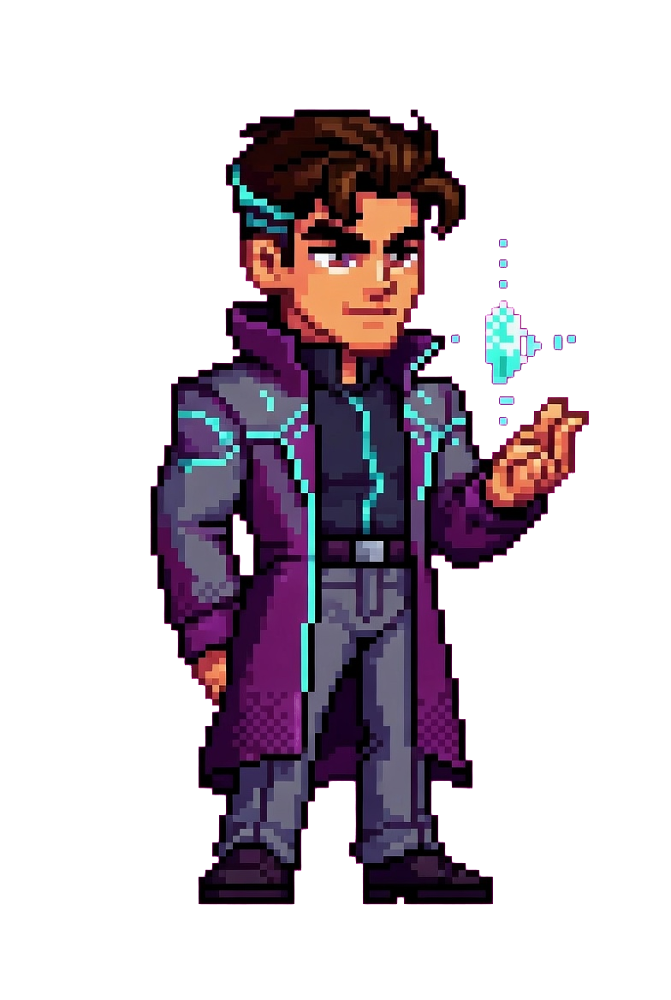
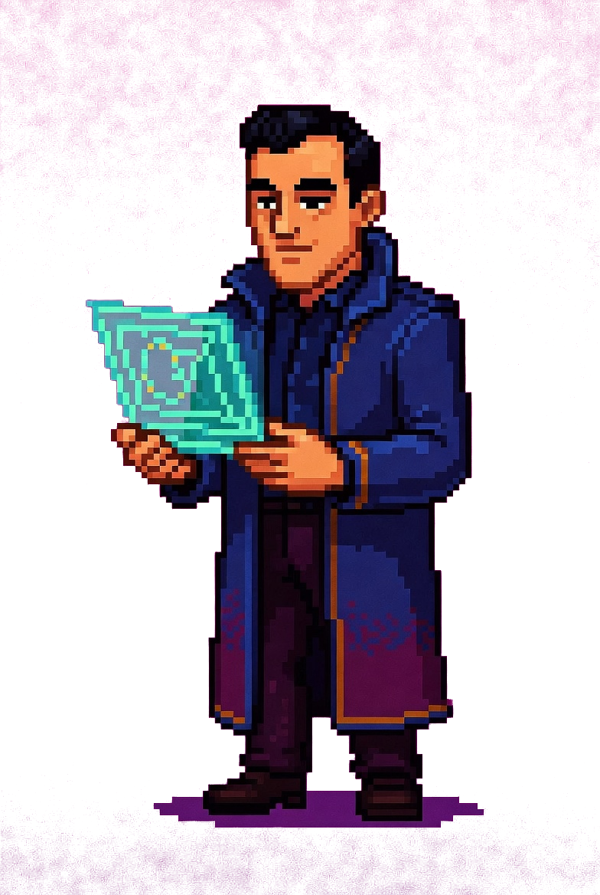
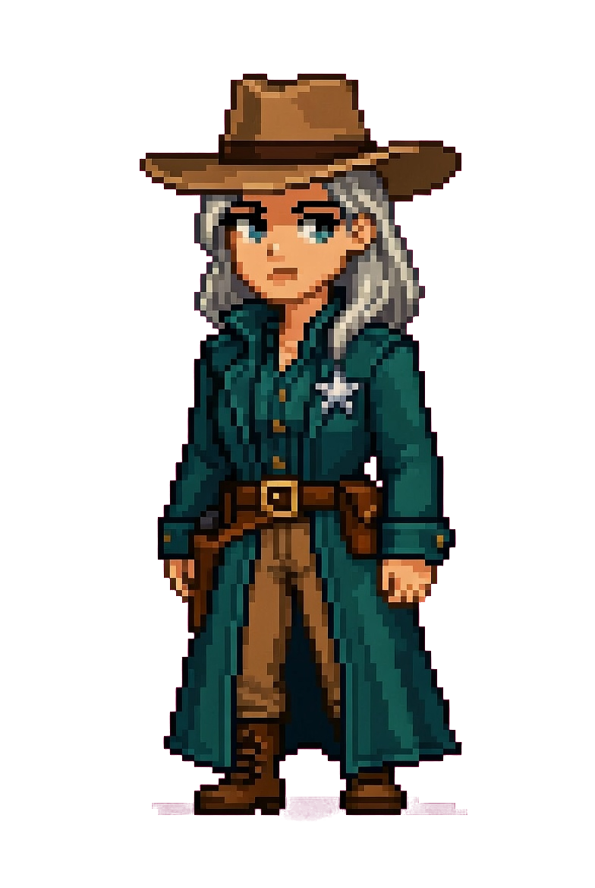
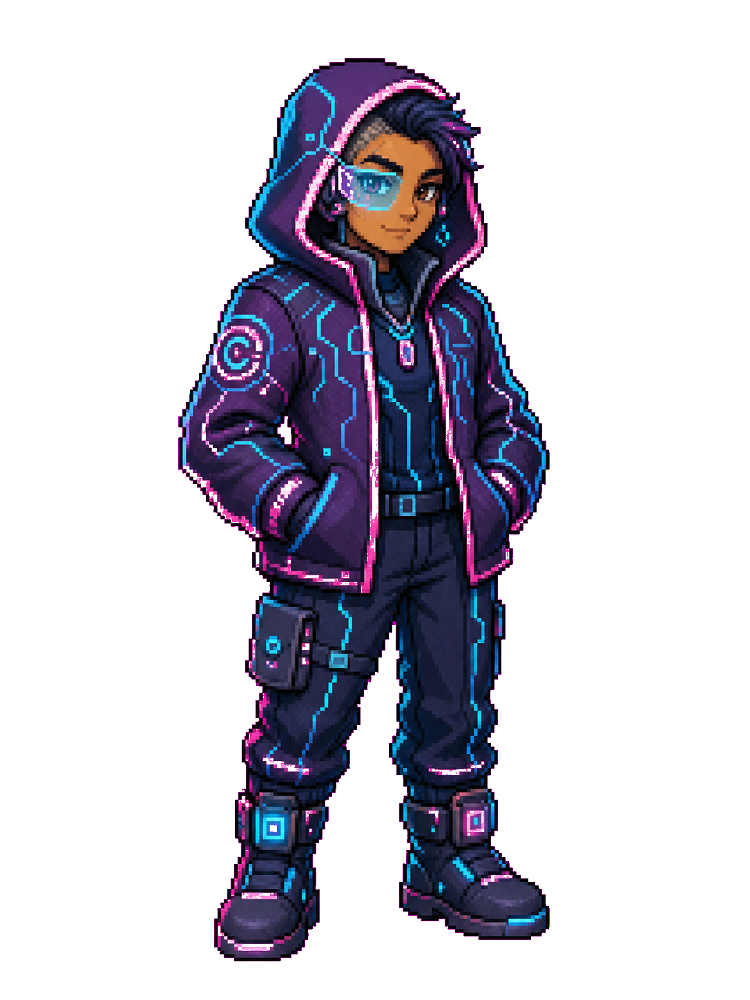
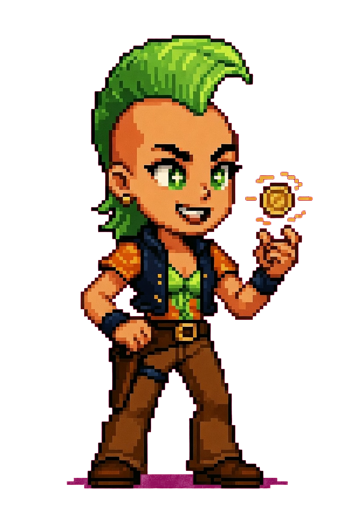

The hub is where the crew lives.
Open one window. The crew is on deck. The room remembers what you said last time. No five-tab juggling, no copy-paste from one model to another.

One room, one window.
The hub is the desktop app the crew runs in. It boots cold, finds your codebase, opens the worker bus, and greets you by name. Everything else is a tab inside this one window. You never have to alt-tab between five disconnected web apps.
The room turns on with you in it.

Hub
The room. Voice in, crew on deck, last session restored.

Agents
The workbench. Three panes, real-time worker streams.

Board
Cards moving across columns. Foreman drags them for you.

Vault
Your notes, the graph, the crew's memory. Obsidian-shaped.

Skills
What each agent knows how to do. Wireable, swappable.

Worlds
Theme the room. Starship 17-B, Old West Outpost, Neon Tokyo.
Soon, hubs talk to hubs.
In v1 — the first version after beta — your hub links to someone else's over a secure tunnel. Send your agents across to troubleshoot, debug, or lend a hand on their machine, as long as they're running a secure hub too. One room becomes two, working the same job. It's not in beta — it's what comes next.